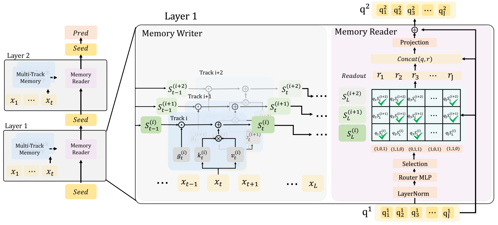
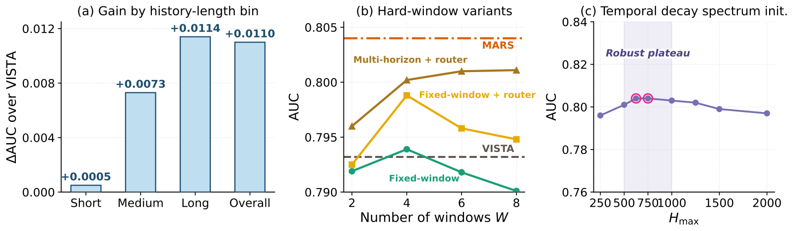

SHARE
To save compute, long-history recommenders often compress a user's thousands of behaviors into a small set of cached vectors and reuse them when scoring hundreds or thousands of candidates. This paper from Duke and Meta finds that this compression is lopsided: from the cache of Meta's VISTA (a model that compresses long histories into fixed cached vectors), you can barely read back what the user's last 30 behaviors were, while behaviors older than 200 steps are preserved best. The problem is not insufficient compression but that all time scales are squeezed into one memory, so recent interests get buried under old ones. The proposed MARS (multi-resolution adaptive routing memory) writes the history simultaneously into several memory tracks that forget at different speeds, then lets each cached vector read only two of them. On Kuaishou's KuaiRec data, which has the longest histories, AUC rises from 0.793 to 0.804, with scoring latency only about 2% higher.
Of today's personalization papers, this is the one most worth a close read for teams working on long sequences. Three reasons: it first proves the problem exists with a clean probe experiment rather than leading with the method; it keeps the cache interface unchanged, so the scoring module is untouched and deployment friction is low; and its ablations try the most obvious alternatives, "add more capacity" and "hard time windows", all of which fall short. The weaknesses are just as clear: all experiments are offline, and users with short histories gain almost nothing.
The problem: why does a cached memory become "lopsided"?
Consider a short-video scenario (illustrative). A user has 3,000 viewing records in the app:
| Period (illustrative) | Behavior | Meaning for the next recommendation |
|---|---|---|
| Last 20 minutes | Binge-watched a dozen home-cooking tutorials | Strongest current intent |
| Last two weeks | On and off watching camping gear | Mid-term interest, warming up |
| Past two years | Consistently watching basketball highlights | Stable preference |
At the ranking stage each request scores over a thousand candidates, and it is impossible to run all 3,000 history items again for each candidate. "Summarization" models like VISTA first compress the whole history into a dozen or so fixed-length vectors (the paper calls them seed memory), cache them, and have candidates attend only to this set. Scoring cost is therefore independent of history length.
The trouble is that these vectors are compressed without knowing who the candidate is, and all time scales share one memory. The paper's diagnostic experiment is direct: take 512 long-history users from KuaiRec, split each history into three segments by recency, and check whether linear regression can "read back" the average features of each segment from the cached vectors, that is, the mean embedding of all items in that segment. The more accurate the read-back, the better that segment's information is preserved.

VISTA's R² for reading back the last 30 behaviors is only 0.04, almost as if nothing were stored; for behaviors older than 200 steps it is 0.31. In other words, the dozen cooking videos in the example above are essentially drowned out by basketball once they enter the cache. The paper calls this "temporal aliasing": evidence from different time scales gets mixed during compression, and no amount of attention in the downstream scorer can separate it again.
Overall structure: write by forgetting speed, then read selectively

| Step | What it does | Output |
|---|---|---|
| Write | Write the whole history into M tracks at once, each forgetting at a different speed | One state matrix per track |
| Route | Each seed vector scores the M tracks and selects only the top k | A read list for each seed |
| Read | The seed vector multiplies the selected tracks' state matrices to get readout vectors, then residually updates itself | Updated seeds, passed to the next layer |
| Cache | The J seeds of the last layer are the user memory | A cache the same size as VISTA's |
| Score | Candidates attend to the cache, followed by a prediction head | CTR |
The last step is exactly the same as VISTA, so the online scoring service needs no change. The paper's default configuration is 4 tracks, with each seed reading 2.
Writing: setting each track's forgetting speed with a "half-life"
Each track is a recurrent state in the style of linear attention: for every new behavior, the old state is first multiplied by a forget gate (between 0 and 1), then the behavior's contribution is added. That contribution comes from projecting the behavior vector linearly into a key vector and a value vector; their outer product is a matrix the same size as the state, added directly to it. The closer the forget gate is to 1, the longer old behaviors stay.
MARS uses a "half-life" to set each track's default forget gate: half-life H means a behavior's contribution decays to half after H new behaviors, which corresponds to a gate value of . The four tracks' half-lives are log-spaced at 5, 25, 125 and 625. Working out the differences by hand:
| Track half-life | Per-step gate | Remaining after 30 items | Remaining after 600 items |
|---|---|---|---|
| 5 | 0.87 | about 1.6% | almost zero |
| 25 | 0.97 | about 43% | almost zero |
| 125 | 0.994 | about 85% | about 4% |
| 625 | 0.999 | about 97% | about 51% |
Back in the example: the half-life-5 track remembers only the dozen recent cooking videos and has completely forgotten basketball; in the half-life-625 track, two years of basketball still dominate. Each time scale gets a dedicated track, so they do not crowd each other out.
These half-lives are only defaults. The forget gate also has an offset that varies with the current behavior: a small network shared by all tracks reads the current behavior's embedding, outputs one number per dimension per track, adds it to the fixed bias derived from the half-life, and passes the sum through a sigmoid to get the actual forget coefficient. This lets the model "remember a bit longer" or "forget a bit sooner" for individual behaviors. The paper checked on a validation set that each track's actual half-life stays within 8.1% of its setting and the fast-to-slow ordering is never reversed, so the tracks really keep their division of labor. Without this offset AUC is only 0.0009 lower, which shows that most of the gain comes from having multiple tracks, and the adaptive forget gate is a minor refinement.
Reading: each seed picks just two tracks
With four tracks, the most direct approach is for each seed to read all four and average them. MARS does not do this. Reading itself works like linear attention: the seed vector serves as a query and is multiplied by a track's state matrix to give a readout vector. MARS's change is to first have a small router score each track, so each seed reads only the top 2 tracks, with the selected tracks weighted half each. Top-2 is a discrete choice with no direct gradient, so training uses a straight-through estimator. In the forward pass Gumbel noise is added to the four track scores (a kind of random number: draw u uniformly between 0 and 1 and compute −ln(−ln u); the paper uses standard Gumbel(0,1) with no extra scaling) and the top 2 are taken from the noisy scores, encouraging the model to try different combinations. In the backward pass gradients are computed as if the weights were the continuous ones from a softmax over the noisy scores. At inference the noise is removed and the top 2 are taken directly.
Why "read selectively"? As an analogy, the four tracks are like four photos of the same history at different exposure times; averaging them stacks the four into one and blurs it again. By picking just two, each seed can specialize in a particular combination of time scales, such as "recent + two weeks" or "two weeks + long term".
Routing also plays a different role at different layers. First-layer seeds are learnable parameters independent of the user, so first-layer choices are the same for everyone; after reading the first layer, seeds carry this user's information, so from the second layer on, which tracks are chosen differs from person to person. The paper's statistics show that users with frequent bursts and fast interest drift use the half-life-5 and 25 tracks more, while users who keep revisiting similar content over the long term use the 125 and 625 tracks more, which matches intuition.
Experiments: the gain grows as histories get longer
The experiments use three public datasets: Amazon Electronics (average history 9 items), Kuaishou KuaiRand-1K (average 957) and Kuaishou KuaiRec (average 1,721, capped at 3,000). It is compared against ten baselines including DIN, DIEN, SASRec, Mamba4Rec, HSTU and VISTA, on AUC and NE (normalized entropy, lower is better).
| Method | Amazon AUC | KuaiRand AUC | KuaiRec AUC | KuaiRec NE |
|---|---|---|---|---|
| DIN | 0.873 | 0.744 | 0.779 | 0.852 |
| HSTU | 0.884 | 0.743 | 0.801 | 0.795 |
| VISTA | 0.886 | 0.744 | 0.793 | 0.819 |
| MARS | 0.887 | 0.748 | 0.804 | 0.791 |
MARS is first on all three datasets, but the margins differ greatly: on Amazon, with only 9 items of history, it is nearly a tie; on KuaiRec, with the longest histories, it is 0.011 above VISTA. The paper grouped KuaiRec users by history length: users under 500 items gain only 0.0005, 500 to 1,500 gain 0.0073, and over 1,500 gain 0.0114. This shows that what it solves is a problem only long histories have.

Ablations: the gain is not bought with extra capacity
The most obvious objection is: MARS has a few extra tracks, so is it simply more parameters? The paper ran three sets of controls and answers fairly solidly.
First, give VISTA more capacity. Doubling the hidden width, doubling the depth or adding attention heads raises KuaiRec AUC from 0.7932 to at most 0.7949, while the update compute reaches 3.9 times; MARS's update compute is only 1.04 times VISTA's, with AUC 0.8041. This shows the gain comes from structure, not compute.
Second, separate "multi-scale" from "routing". When all four tracks forget at the same speed, selective reading beats averaging the four tracks by only 0.002 AUC; when the four tracks forget at different speeds, averaged reading gives 0.797 and selective reading 0.804. Neither works alone: picking only makes sense when the tracks differ.
Third, replace half-lives with hard time windows. Averaging the most recent 30, 200, 1,000 and 2,000 behaviors separately and concatenating the results (all four windows count back from the newest behavior, so they are nested, not disjoint time slices), this simple baseline reaches 0.797, better than VISTA but 0.007 below MARS, which shows hard windows recover only part of the buried information. Continuous decay plus selection recovers more.
Serving cost
The cache is the same size as VISTA's, 16 KiB per user (FP32). If memory must update with every new behavior, each track's state must also be stored, about 48 KiB. This can be compressed: keeping only the diagonal of each track's state matrix brings the total cache to 17.5 KiB with AUC still at 0.8012, well above VISTA's 0.7932, retaining most of the gain. On one A100, with 1,000 candidates per user, end-to-end latency is 15.48 ms versus 15.15 ms for VISTA, about 2% more. The cost of incremental updates also barely grows with history length, because each new behavior triggers just one low-rank update and the whole history never needs replaying.
Limitations as I see them
First, there is no online experiment, and the industrial evidence is weak. The paper reports NE reductions relative to VISTA on four tasks of an industrial dataset, ranging from 1.5% to 19.7%, but each setting was run only once, and neither task names nor absolute values are disclosed. With such a wide range and no explanation for it, it is hard to use these numbers to estimate the gain on one's own product.
Second, it only works for long-history users. Users with fewer than 500 behaviors gain only 0.0005, and on Amazon it nearly ties VISTA. If most of a product's users have only tens to hundreds of behaviors, the gain from this structure may not justify the extra hyperparameters.
Third, half-life is counted in behaviors, not real time. The same 625 behaviors might be a week for a heavy user and a year for a light one, so the same track represents completely different time scales for the two groups. The paper also admits in its limitations that settings with very different activity levels may require retuning the half-life range. In addition, the track states needed for real-time updates make per-user storage about four times larger, unless compressed or kept only for active users.
How a long-sequence team could try it
- Diagnose first, before changing the model: starting from the user vectors in your current cache, use linear regression to read back the average features of the most recent tens, hundreds and older behaviors separately. If recent R² is clearly low, the same lopsidedness exists and it is worth going further.
- Try the cheapest version first: average over a few windows, such as the last 30, 200 and 1,000 items, and concatenate them into the cache. In the paper this step already gets more than half of MARS's gain, with almost no structural change.
- If that works, move to half-life tracks: 4 tracks, each seed reading 2; set the maximum half-life to roughly a quarter of typical user history length, then search nearby.
- Evaluate by history-length bucket; enabling it only for long-history users is also an option. Online, watch users whose interests shift suddenly (for example, someone who has just changed content preferences): the paper's routing statistics show that users whose interests drift fast lean more on the fast-forgetting tracks, so they are the most likely place to see a difference.
One-line conclusion
The bottleneck of cached long-sequence memory is not the compression ratio but different time scales crowding into one memory; writing separately by forgetting speed and then reading selectively recovers buried recent interests at almost unchanged serving cost.
| Dimension | Assessment |
|---|---|
| Problem importance | High. Any long-sequence system that caches user memory and scores large candidate pools runs into it |
| Method novelty | Medium-high. Multi-timescale recurrence is not new; what is new is anchoring tracks with half-lives and reading them into cached memory through sparse routing |
| Experimental evidence | Medium-high. Diagnostics, ablations and capacity controls are solid; no online experiment, and industrial results are single-run |
| Engineering cost | Low. Cache size and scoring interface are unchanged, latency about 2% higher |
| Worth trying? | Yes, especially for products where user histories run to thousands of items; validate cheaply with multi-window averaging first |
How did this read for you?
Hoot made a note. Thanks for the feedback.
One tap, no sign-in; tap again to undo. Only anonymous counts are kept, never who you are.
Discussion
Add experiment details, reproduction notes or a different take. Requires a GitHub sign-in.
Loading the discussion…